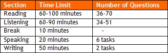
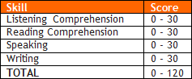

Before discussing TOEFL, have you put together your plan to attack the GMAT?
Yeah, Megaron, relax. I have already set up my plan and the estimate date for my test is the last week of JUNE.
Great.
As you suggested, I left some extra time in case I need it. If I do not get my score in June, I will still have July for a second attempt. From what I was told, people apply with their 740, but they get a 680 in their first test.
Exactly.
I wonder if I can take the TOEFL in July? I would not like to worry about tests when the time comes to attack essays for specific schools in August.
Well, we will discuss this today. We will talk about absolutely everything related to TOEFL.
Great.
Can I ask you a favor before that? Read what 5 former students say about their preparation for this test. Read: TOEFL Preparation Testimonials – 5 Personas.faq.
I have read it. Apparently, the greatest difficulty with the TOEFL is in the Speaking task, right?
Yes, Speaking is always the main obstacle. If you get less than 25 (total: 30), it will be hard to get the minimum score required by schools (109+ de Harvard / 105+ INSEAD).
What is the purpose of the TOEFL?
Various factors determine an applicant’s admission to an MBA. Among the academic criteria, the TOEFL score (and its breakdown: the score for Speaking, for example, should be carefully analyzed) is only one of the components of an application package.
What is TOEFL, anyway?
The TOEFL is a test that measures your ability to listen, read, speak, and write in English as a foreign language. The test includes 4 sections and takes at least 4 hours to complete:

What does a 109 mean?
The score is defined by the sum of the 4 Skills tested:

What is the most common mistake in terms of TOEFL preparation?
Many students who get 700+ on the GMAT end up taking the TOEFL twice because they do not prepare for the Speaking properly. They did not stop to devote one weekend and check the basic structure of the test. They simply paid the fee and showed up on the test date.
And later they wasted another morning of their lives retaking the TOEFL.
And that is not all. I calculate that he will waste this morning and at least 5 additional hours.
You mean... studying for the new test?
Yes, the test is long. He will have to study the Speaking and take at least one complete simulation of the TOEFL: at least 5 more hours.
And he could avoid all that...
Yes, he could.
Is that pure lack of planning?
No doubt...
Who can waive the TOEFL?
It depends on each school’s requirements. Usually scores are required of all applicants who received a degree from a non-English language instruction college/university.
So Americans do not need to take the test…
If you're a native English speaker or U.S. citizen who received a degree from a non-English language instruction college/university you should take the test (again, check individual requirements).
And what is a good score?
It depends on your plan, but in general, the schools announce a minimum score. HBS asks for a 109, Chicago Booth for 104+, and INSEAD for 105+. Important: these were minimum grades required until 2012; you should recheck admission criteria.
OK, but in general?
I’d say if you’re not applying to HBS, you should focus on 106+.
I met a guy who got into HBS with a 107 TOEFL score...
In the past HBS admitted various applicants with 107 or 108. Those applicants ran the risk even though the school formally requires 109. No one will ever know what factors motivated a denial (we raise hypotheses, but that’s all). To recommend an action, I must know your package and your sale. To play safe, the recommendation is simply follow what HBS requests: a 109 minimum.
Cool... and what should I do NOW regarding the TOEFL?
We recommend focusing on this test once you have obtained your GMAT score. You will benefit from your preparation for the GMAT.
Ok, but how do I register for the TOEFL?
Register ONLINE: on www.toefl.org go to register online.
IMPORTANT:
- Current test fee is US$185 (2012 values), subject to change without notice;
- Select your score recipients (4 business schools to receive your scores) during registration; you can change your options until one day before the test, but
- You cannot select score recipients at the test center.
- Select your score recipients (4 business schools to receive your scores) during registration; you can change your options until one day before the test, but
- You cannot select score recipients at the test center.
How will the B-schools find out about my scores?
When you take the TOEFL, you can at no extra charge send your scores to 4 Schools. Schools will “believe” in the numbers you will inform in their online data forms. Later, upon your admission, the school will check the information. You can check your status online, as you log in to your account on the TOEFL site. ETS does NOT send scores to any b-school. It will make them available online.
IMPORTANT
- Once you submit your application, check regularly the STATUS of your application on the B-school website, your account. ETS can make mistakes;
- Unlike the GMAT, which shows you the score as you finish the test, TOEFL (ETS) takes at least two weeks to release your score on its online system (official site).
- Unlike the GMAT, which shows you the score as you finish the test, TOEFL (ETS) takes at least two weeks to release your score on its online system (official site).